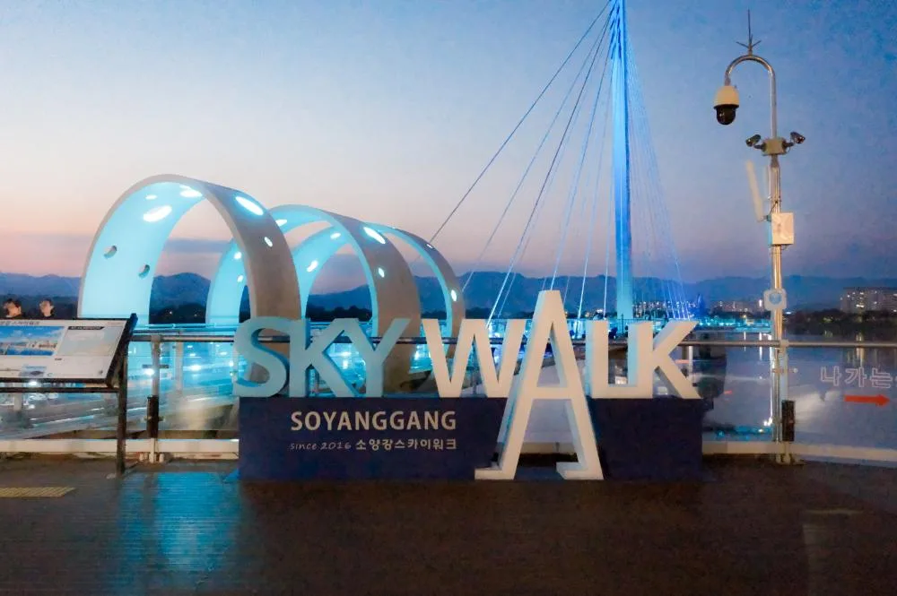
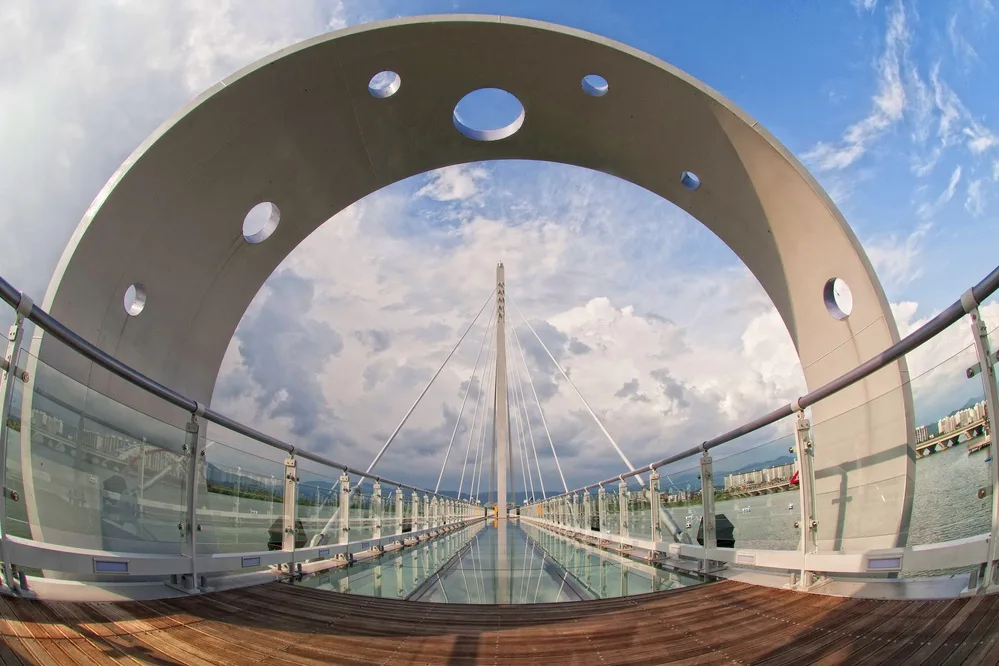
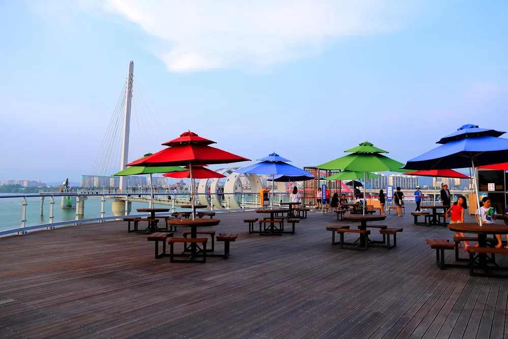
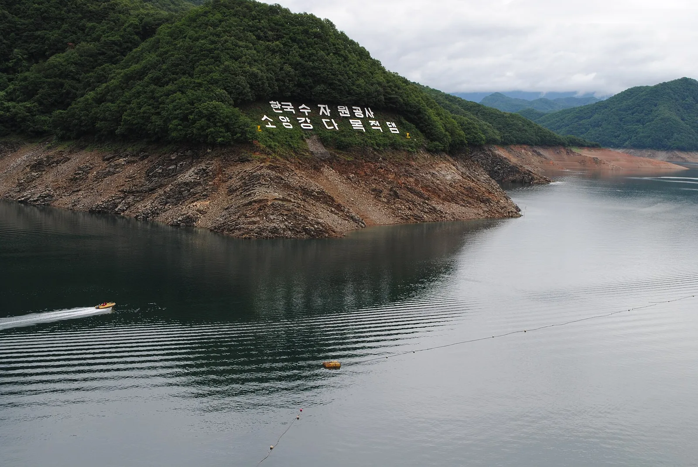
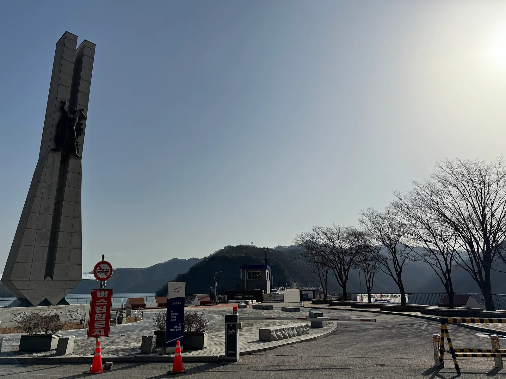
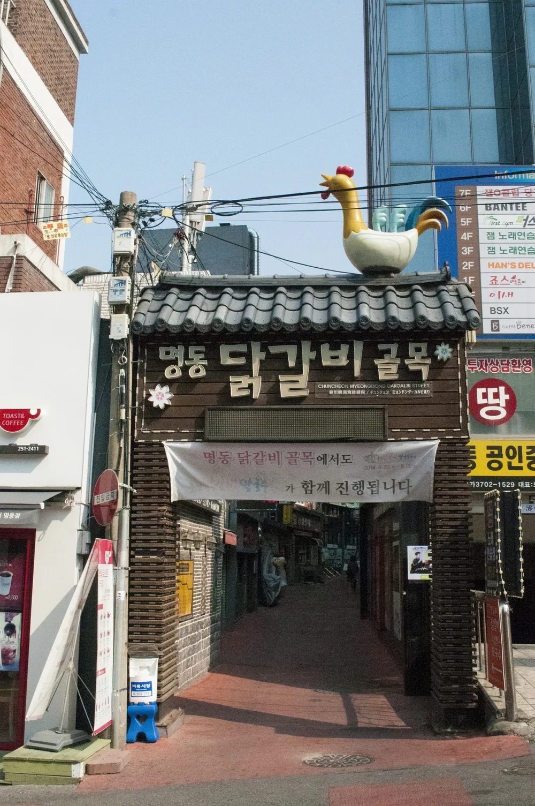
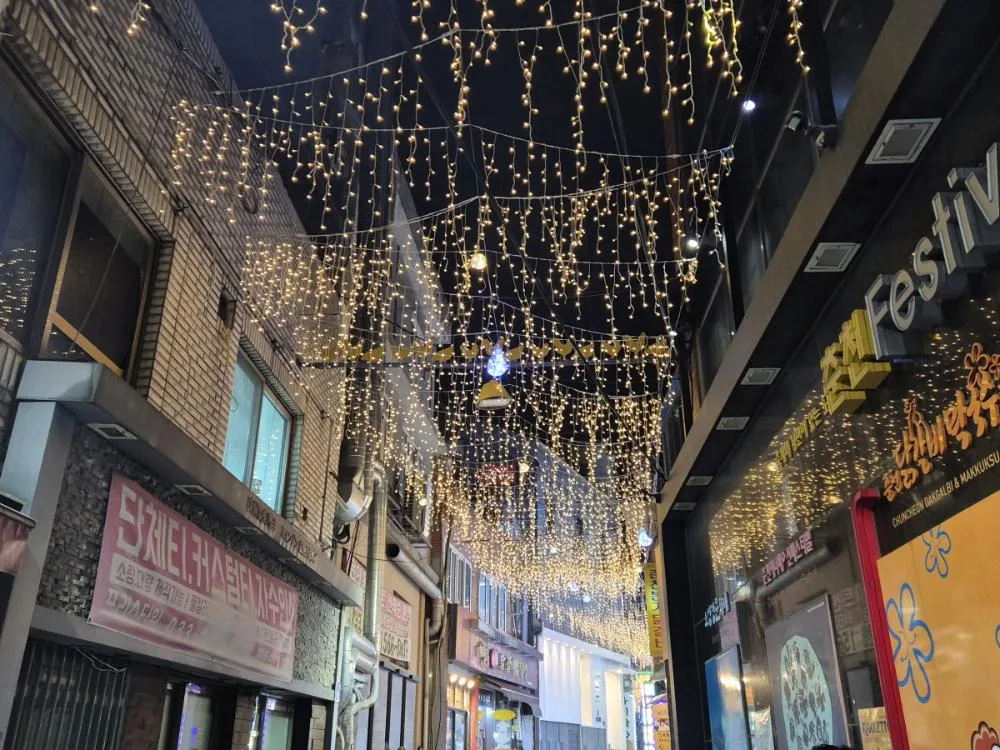
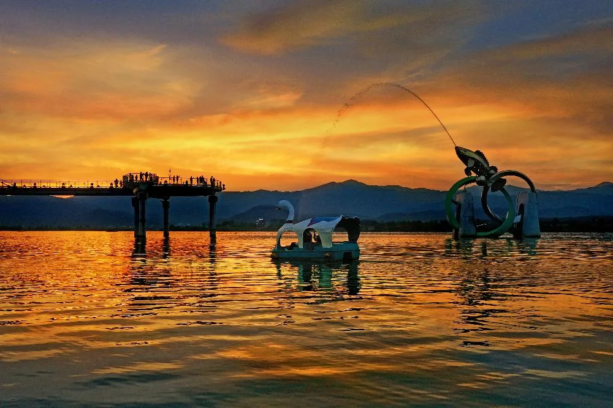
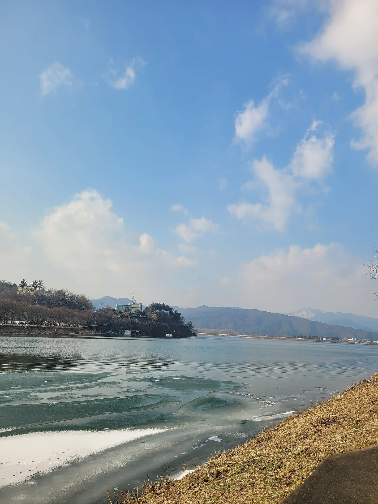

▲ 소양강 스카이워크의 원형 전망광장. 발밑 유리 바닥에 노을과 방문객의 모습이 그대로 비친다
강원 춘천시 소양강처녀상 인근에 놓인 소양강 스카이워크는 다리 174m 가운데 156m가 통유리 바닥으로 돼 있다. 국내에 건설된 유리 스카이워크 중 가장 긴 구간이다. 유리 두께는 4cm, 강물까지 거리는 7.5m. 맑은 날 다리 한가운데 서면 구름과 강물이 발밑에서 그대로 출렁이는 착시가 인다. 2016년 7월 문을 연 이 다리 하나만 보고 돌아가기엔 아깝다. 걸어서 닿는 소양강처녀상, 차로 20분 안팎인 소양강댐, 시내 명동 닭갈비골목과 공지천 조각공원까지 묶으면 하루 코스가 나온다. 이 기사는 2026년 9월 기준 입장료·운영시간·주차 정보부터 연계 코스까지 방문 순서대로 정리했다.
1. 소양강 스카이워크 — 국내 최장 156m 유리 구간

▲ 스카이워크 입구의 조형 사인. 2016년 개장했음을 알려준다 ⓒ 춘천시청 관광포털
스카이워크는 강변에서 물 쪽으로 20m 진입 데크, 통유리로 이어지는 140m 직선 구간, 그리고 호수 한가운데 놓인 지름 16m 원형 전망광장 순서로 이어진다. 원형광장 자리는 사방이 트여 있어 소양강과 주변 산세를 한눈에 담을 수 있는 포토존으로 꼽힌다. 다리 골조 곳곳에는 흰색 아치 구조물이 반복해서 세워져 있는데, 밤이 되면 이 아치와 다리 전체에 조명이 들어와 오색으로 물든다.

▲ 아치형 구조물 아래로 이어지는 유리 바닥 통로. 다리 끝 기둥에서 뻗어 나온 케이블이 다리 전체를 지지한다 ⓒ 춘천시청 관광포털
유리 바닥은 미끄럼과 흠집 방지를 위해 관리사무소에서 나눠주는 덧신을 신어야 입장할 수 있고, 하이힐·등산용 스틱·킥보드·인라인스케이트 착용자와 음주자, 반려동물 동반은 입장이 제한된다. 음료나 음식물 반입도 금지돼 있다.
2. 입장료·운영시간·주차 — 2026년 기준

▲ 스카이워크 초입의 목재 데크 쉼터. 파라솔 테이블 뒤로 다리를 지탱하는 흰색 주탑이 보인다 ⓒ 춘천시청 관광포털
입장료는 1인 2,000원이지만, 입장할 때 같은 금액의 춘천사랑상품권을 돌려받아 춘천 지역 가맹점에서 쓸 수 있다. 사실상 무료로 즐기는 구조다. 춘천시민, 경로자, 장애인, 국가유공자 등은 입장료가 면제된다. 운영시간은 성수기(4~10월) 10:00~20:30, 비수기(11~3월) 10:00~17:30이며, 입장은 마감 30분 전까지 가능하다. 매주 화요일은 휴무다.
| 항목 | 내용 |
|---|---|
| 입장료 | 2,000원(입장 시 동액 춘천사랑상품권 환급), 춘천시민·경로자·장애인·국가유공자 등 면제 |
| 운영시간(성수기 4~10월) | 10:00~20:30 (입장 마감 20:00) |
| 운영시간(비수기 11~3월) | 10:00~17:30 (입장 마감 17:00) |
| 휴무일 | 매주 화요일 |
| 다리 길이 | 전체 174m, 유리 바닥 구간 156m(국내 최장) |
| 주차(스카이워크 공영주차장) | 최초 30분 600원, 이후 10분당 300원 |
| 위치 | 강원특별자치도 춘천시 영서로 2663 |
3. 소양강처녀상 — 스카이워크 옆을 지키는 노래비
▲ 노을을 배경으로 선 소양강처녀상. 뒤로 소양강스카이워크 다리가 이어진다 ⓒ 춘천시청 관광포털
스카이워크에서 강변을 따라 걸으면 소양강처녀상과 만난다. 1970년 발표된 국민 가요 '소양강 처녀'를 기리기 위해 세운 조형물로, 노래 속 처녀의 모습을 형상화했다. 소양강과 스카이워크를 함께 조망할 수 있는 자리에 서 있어, 해 질 무렵이면 노을과 어우러진 실루엣을 담으려는 방문객들이 몰린다. 스카이워크 야간 조명이 켜지는 시간대와 겹쳐 찾으면 다리와 동상을 함께 담은 사진을 남기기 좋다.
4. 소양강댐 — 국내 최대 사력댐, 차로 20분

▲ '한국수자원공사 소양강다목적댐' 표지가 새겨진 산기슭과 소양호. 모터보트가 지나가며 잔물결을 남긴다 ⓒ Wikimedia Commons
스카이워크에서 차로 20분 남짓 거리에는 소양강댐이 있다. 1967년 착공해 1973년 완공된 사력(砂礫)댐으로, 흙과 돌을 다져 쌓은 방식으로는 국내에서 가장 큰 규모다. 댐 길이 530m, 높이 123m이며 저수량은 29억 톤에 달해 상류에 거대한 인공 호수 소양호를 만들었다. 발전 시설용량은 20만kW(10만kW×2기)로, 1973년 11월 상업발전을 시작한 이래 북한강 유역 유일의 다목적댐으로 홍수 조절과 전력 생산을 함께 맡고 있다.

▲ 소양강댐 입구의 대형 기념 조형물. 뒤로 한국수자원공사(K-water) 소양강댐지사 건물이 보인다 ⓒ Wikimedia Commons
댐 전망대에서는 소양호와 주변 산세를 한눈에 내려다볼 수 있고, 선착장에서 청평사행 배를 탈 수도 있다. 스카이워크의 '물 위를 걷는' 체험과 소양강댐의 '거대한 인공호수' 규모를 함께 보면 소양강이라는 강 하나가 춘천을 어떻게 바꿔놓았는지 실감할 수 있다.
5. 명동 닭갈비골목·공지천 조각공원 — 시내 먹거리·산책 코스

▲ 대형 닭 조형물이 얹힌 명동 닭갈비골목 입구. 춘천 시내 대표 먹거리 골목이다 ⓒ 춘천시청 관광포털
스카이워크에서 시내 쪽으로 이동하면 명동 닭갈비골목이 있다. 1970년대 춘천이 '호반의 도시'로 알려지며 여행객이 몰리자, 적은 돈으로도 푸짐하게 먹을 수 있는 닭갈비가 인기를 끌면서 자연스럽게 골목 상권이 형성됐다고 전해진다. 지금도 명동 한복판에 닭갈비·막국수 전문점이 밀집해 있어 춘천을 대표하는 먹거리 골목으로 꼽힌다.

▲ 밤이 되면 조명 장식으로 물드는 명동 닭갈비골목. 골목 안쪽까지 식당들이 이어진다 ⓒ 춘천시청 관광포털
식사 후에는 공지천으로 걸음을 옮기기 좋다. 효자동 일대를 흘러 의암호로 이어지는 공지천 일대는 1980년대 초부터 춘천 시민들의 대표적인 여가 공간으로 자리잡았고, 최근에는 조각공원과 수변공원이 조성돼 강변 산책로, 넓은 잔디밭, 야외공연장, 체육시설을 함께 갖춘 수변 문화예술 공간으로 꼽힌다. 조각 작품들 사이를 걸으며 의암호 풍경을 감상할 수 있다.
춘천여행ON에서 명동 닭갈비골목 상세 정보 확인 가능6. 의암호 자전거길 — 연계 코스로 하루 완성

▲ 노을 지는 호수에 떠 있는 백조 모양 페달보트. 왼쪽 멀리 스카이워크 실루엣이 보인다 ⓒ 춘천시청 관광포털
공지천에서 의암호를 따라 이어지는 의암호 자전거길은 춘천의 대표 순환 코스 중 하나다. 호수 둘레를 타원형으로 도는 전체 코스는 약 30km, 완주하는 데 3시간 20분 안팎이 걸린다. 대부분 구간이 완만한 평지형 전용 자전거도로로 조성돼 있고, 곳곳에 전망 쉼터와 공기주입기, 화장실 등 편의시설도 갖춰져 있어 초보자도 부담 없이 도전할 만하다는 평가를 받는다. 코스를 따라가면 의암댐, 춘천인형극장, 삼악산 조망 포인트 등을 차례로 지나게 돼, 페달을 밟는 동안에도 볼거리가 끊이지 않는다. 시간이 넉넉하지 않다면 공지천 조각공원에서 자전거를 빌려 의암호 일부 구간만 왕복하거나, 아예 자전거 없이 강변을 걸으며 호수 풍경을 즐기는 것도 방법이다.
의암호 건너편 삼악산 자락에는 삼악산 호수케이블카도 있다. 삼천동에서 의암호를 가로질러 삼악산 정상까지 약 3.6km를 잇는 노선으로, 바닥이 통유리로 된 크리스털 캐빈을 타면 발아래로 호수 전경이 펼쳐진다. 정상에서 산책로를 따라 10분쯤 걸으면 별도의 스카이워크 전망대와도 만날 수 있어, 물 위를 걷는 소양강스카이워크와 산 위에서 호수를 내려다보는 삼악산 호수케이블카를 함께 묶어 1박 2일 코스로 확장하는 여행객도 많다.

▲ 공지천유원지에서 바라본 의암호. 호수 가운데 섬처럼 놓인 전망대와 산줄기가 함께 담긴다 ⓒ Wikimedia Commons
하루 일정을 짠다면 소양강 스카이워크(오전) → 소양강처녀상 → 소양강댐 → 명동 닭갈비골목(점심) → 공지천 조각공원 → 의암호 자전거길(오후~저녁) 순서를 추천한다. 스카이워크는 해 질 무렵 조명이 켜지는 야경이 백미이므로, 낮에는 댐과 시내를 둘러보고 저녁 무렵 다시 스카이워크로 돌아오는 동선도 고려할 만하다.
춘천여행ON에서 소양강스카이워크 연계 코스 확인 가능✅ 춘천 소양강 스카이워크, 가기 전 체크리스트
· 2016년 7월 개장, 전체 174m 중 156m가 유리 바닥(국내 최장), 강물까지 7.5m
· 입장료 2,000원(동액 춘천사랑상품권 환급), 성수기(4~10월) 10:00~20:30·비수기(11~3월) 10:00~17:30, 매주 화요일 휴무
· 주차는 맞은편 공영주차장, 최초 30분 600원·이후 10분당 300원
· 유리 바닥 보호를 위해 덧신 필수, 하이힐·등산스틱·킥보드·반려동물 동반 입장 제한
· 스카이워크 옆 소양강처녀상, 차로 20분 거리 소양강댐(1973년 준공, 국내 최대 사력댐)과 연계 가능
· 시내 명동 닭갈비골목·공지천 조각공원·의암호 자전거길까지 묶으면 반나절~하루 코스 완성
· 야간에는 다리 전체에 오색 조명이 켜져 소양강처녀상과 함께 춘천 대표 야경 명소로 꼽힘